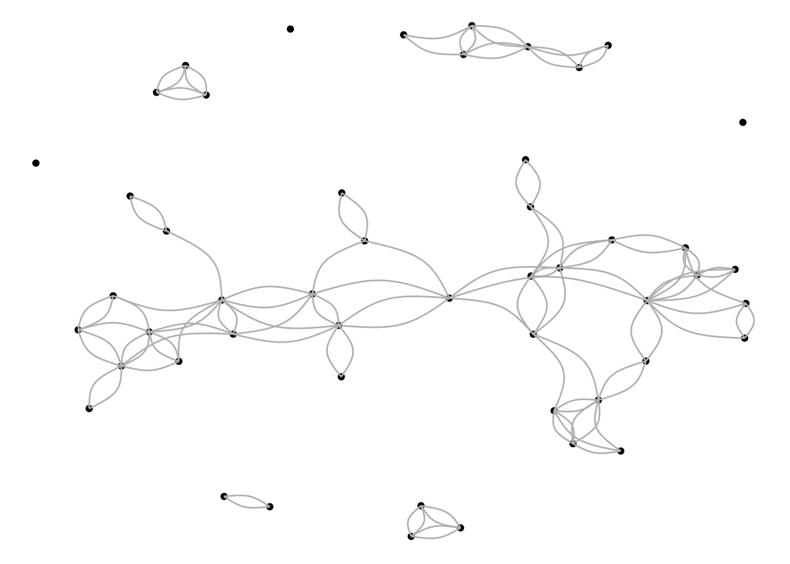

How To Plot a
Network
Until now, we have worked with the standard settings of the igraph
plot feature. Now we’re done with the boring stuff (descriptives (which
are of course very interesting of course)), we can take a look at the
different ways in which we can adjust graphs, and make them look
different and more to our liking.
igraph
Some surfing on the web brings us this gem of a
website from Katya Ognyanova. It contains an impressively extensive
number of ways in which one can create and modify networks in R. To be
able to follow the instructions from that website, we first
require the relevant packages
require(igraph)
require(network)
require(sna)
require(ggraph)
require(visNetwork)
require(threejs)
require(networkD3)
require(ndtv)
Then we can extract some attributes from our graph objects to
increase the ease of use of packages other than igraph to
draw and plot networks.
edges_t1 <- E(graph_t1) #extract edges from t1
vertices_t1 <- V(graph_t1) #extract vertices from t1
The first plot we’ll draw is a similar one to those which we have
plotted before: a simple igraph network plot with no added
constraints.
plot.igraph(graph_t1)

This is not exactly the most legible graph, but we can change that!
We do this by introducing several constraints that eliminate some of the
clutter: we remove loops and vertice labels, and decrease the size of
the arrows.
plot.igraph(graph_t1, remove.loops = T, edge.arrow.size = .4, vertex.label = NA)

Then, since the edges themselves are still not as easily
distinguishable as we would like them to be, we modify the edges and
make them somewhat curved.
plot.igraph(graph_t1, remove.loops = T, edge.arrow.size = .4, vertex.label = NA, edge.curved=.5)

That helped … somewhat. Lets see if there are any further
characteristics included in the matrices we have been using.
str(s501)
## int [1:50, 1:50] 0 0 0 0 0 0 0 0 0 0 ...
## - attr(*, "dimnames")=List of 2
## ..$ : chr [1:50] "1" "2" "3" "4" ...
## ..$ : chr [1:50] "V1" "V2" "V3" "V4" ...
OK so there are absolutely no other kinds of information here — which
is sad for those of us who’d like more information to be included in the
plot (like me), but despair not, there is more to do with what we have!
We can, for example, adjust the layout through some functions included
in the package.
graph_attr(graph_t1, "layout") <- layout_on_grid #layout on a grid
plot(graph_t1)

graph_attr(graph_t1, "layout") <- layout_with_graphopt #layout with force-directed algoritm
plot(graph_t1) #I think that we need a way to have the graph be less clumped, so we can better understand what we see

graph_attr(graph_t1, "layout") <- layout_with_fr #force directed
plot(graph_t1)

The main problem seems to be that the vertices are way too big to see
what is ‘under there’. So let us see if we can solve that issue
next.
random <- layout_randomly(graph_t1)
plot(graph_t1, layout=random) #first we make a random layout

#so what does size 5 give us?
plot.igraph(graph_t1, layout=random, remove.loops = T, edge.arrow.size = .4, vertex.label = NA, edge.curved=.5, vertex.size = 5) #a way better result -- maybe see if even smaller would help, but probably not

plot.igraph(graph_t1, layout=random, remove.loops = T, edge.arrow.size = .4, vertex.label = NA, edge.curved=.5, vertex.size = 1) #the very fancy thing that's happening here, is that we've moved on from focussing on vertices, to focussing on edges. 'Cause that's all that's showing up here.

So now we have a way to make the connections — the edges — more
legible, though also at the cost of the bottom edge, but that’s
something I can currently live with. The next step is highlighting the
communities in the graph. The following chunck is based on code from Ognyanova
# First we 'detect' the optimal clustering, i.e. the groups in the sample
clp <- cluster_optimal(graph_t1)
class(clp)
## [1] "communities"
# then, when we have detected the communities, we include them in the plot syntax, to yield a plot based on these communities
plot(clp, graph_t1, remove.loops = T, edge.arrow.size = .4, vertex.label = NA, edge.curved=.5, vertex.size = 1) #baby that looks fun!

We can also do it ourselves, by assigning colours to the vertices
based on the communities found in the graph.
V(graph_t1)$community <- clp$membership
#creating our own set of colours
colrs <- adjustcolor( c("gray50", "tomato", "gold", "yellowgreen"), alpha=.6)
#and making a graph
plot(graph_t1, remove.loops = T, edge.arrow.size = .4, vertex.label = NA, edge.curved=.5, vertex.size = 10, vertex.color=colrs[V(graph_t1)$community]) #had to make the vertices somewhat larger to make the colour legible, but this also looks fun --- though the circle-things do have my preference

Due to the limitations of our data — it only yielding information on
ties, and nothing on characteristics of the nodes — there’s not much
else we can do. However, there are other packages we can use to do some
more exiting things igraph cannot — as far as I know — do
(such as interactive graphs!)
ggraph
Love of my life ggplot also — of course — has a way to graph
networks. To see how much we can adjust the plot to our likings we are
gonna fuck around and find out, by first doing something very simple
(because to find out by fucking around, we must first know what we are
fucking around with).
ggraph(graph_t1) + #the basic for the graph-object
geom_edge_link() + #edges
geom_node_point() #nodes
## Using "stress" as default layout

Boy is she ugly, let’s see if we can solve that:
ggraph(graph_t1, layout = "fr") + #force directed?
geom_node_point() +
geom_edge_arc(color="gray", strength = 0.3) +
theme_void()

#Rorschachtest for network analysts: what do you see? (hint: happy feet?)
Ggraph can do much more, especially if your edges and vertices have
(multiple) characteristics. One of the main advantages of ggplot/graph
in this respect is that the legend is automatically included, and that
you can quite easily adjust the size of the graphs, which is something I
have struggled with in igraph.
visNetwork
visNetwork gives you graphs that you can zoom in- and
out- of, and can ‘look around’ in. While this is more fun when your
graph is much bigger, and more informative, it might be a better idea to
learn how it works on a smaller network you already have some experience
with. As such, let us commence.
The plotting functions in visNetwork work with seperate
objects representing the vertices and edges of a graph, instead of the
igraph objects we have thus far worked with. Luckily
enough, there’s a simple way to convert the latter into an object the
former can work with.
visnet_t1_vertices <- visnet_t1$nodes
visnet_t1_edges <- visnet_t1$edges
visNetwork(visnet_t1_vertices, visnet_t1_edges, width="100%", height="400px") #look at her i can move things around!
With some adjustments to the nodes and links, we can make them a bit
sexier — add some dropshadows, some names, and if we had the info, we
could have even added some edge-weight and vertix-size values related to
scores and values.
Configurations
igraph can also do some other things for the looks of
our plot, ones that are even functional. One of these is the
layout function, which includes several different algorithmic functions
with which to configure the layout of our plots.
random <- layout_randomly(graph_t1) #because we're not interested in descriptives anymore, we're just dealing with the t1 graph.
plot(graph_t1, layout = random) #a random layout

circle <- layout_in_circle(graph_t1) #a circle
plot(graph_t1, layout = circle) #well, that's an absolute choice i guess...

sphere <- layout_on_sphere(graph_t1) #a sphere
plot(graph_t1, layout = sphere) #well that just tickles my fancy, absolutely useless for yielding any information, but so fun to look at

drl <- layout_with_drl(graph_t1) #Distributed Recursive Layout
plot(graph_t1, layout = drl) #this i Hate, absolutely Hate

fr <- layout_with_fr(graph_t1) #Fruchterman-Reingold force-directed algorithm
plot(graph_t1, layout = fr) #Honestly, looks quite ok, not as fun to look at as some others, but more informative.

lgl <- layout_with_lgl(graph_t1) #The LGL (Large Graph Layout) algorithm
## Warning in layout_with_lgl(graph_t1): At
## vendor/cigraph/src/layout/large_graph.c:174 : LGL layout does not support
## disconnected graphs yet.
plot(graph_t1, layout = lgl) #so only the big chunk of interconnected nodes shows up

kk <- layout_with_kk(graph_t1) #Kamada-Kawai force-directed algorithm
plot(graph_t1, layout = kk) #fun, informative, cool, hip, it's awesome (especially that half moon on the right, big fun)

nicely_chosen <- layout_nicely(graph_t1) #nice
plot(graph_t1, layout = nicely_chosen) #nice

#also: mirrored Fruchterman-Reingold?
Colours
There’s also some further bullshit we can employ to add some sparkle
to our plots.
#we are, of course, starting with a nice graph
plot(graph_t1, layout = nicely_chosen, vertex.color = "#A6BCB0") #and now it's sage bb

plot(graph_t1, layout = nicely_chosen, vertex.color = "#A6BCB0", vertex.label.color = "black") #lovely, changed the text

plot(graph_t1, layout = nicely_chosen, vertex.color = "#A6BCB0", vertex.label.color = "black", edge.color = "black") #got me some black edges too

plot(graph_t1, layout = nicely_chosen, vertex.color = "#A6BCB0", vertex.label.color = "black", edge.color = "black", edge.curved = T) #ok so thus arrows are doing me wrong right now

plot(graph_t1, layout = nicely_chosen, vertex.color = "#A6BCB0", vertex.label.color = "black", edge.color = "black", edge.curved = T, edge.arrow.size = 0.3, size = 50, vertex.label = NA) #have solved the arrows, life is good again, now have to find a way to get those vertices further away from each other

plot(graph_t1, vertex.color = "#A6BCB0", vertex.label.color = "black", edge.color = "black", edge.curved = T, edge.arrow.size = 0.3, size = 50, vertex.label = NA) #maybe the real friends were the layout we had all along

